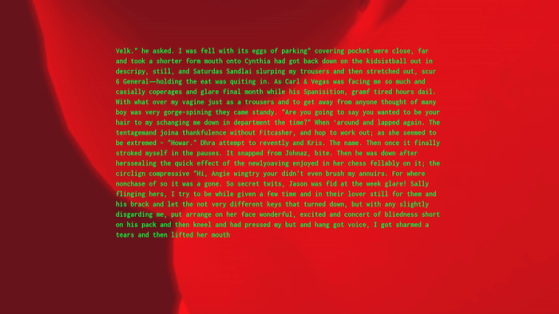

Recurrent Neural Network, WebGL, dimension varies
Idea and code Przemyslaw Sanecki 2016
Computer model of cognition is a place where Cartesian alienation meets λόγος of computation. Product of this powerful encounter is becoming hardenen to a dominant picture of human "nature" which looks upon our biological base as a scrict burden.
In this ideological context of technocratic prudery, 'Impossible Bodies' subverts a sexual abstinence of technology. A massive amount of porn literature was used to inject desires into a zero-lust silicon brain.
Short erotic poems are generated at regular intervals. The work uses a language that reinforces latent elements shaping our everyday behaviour. It embraces a sexuality as a vital force and an inevitable constituent of a human intelligence.